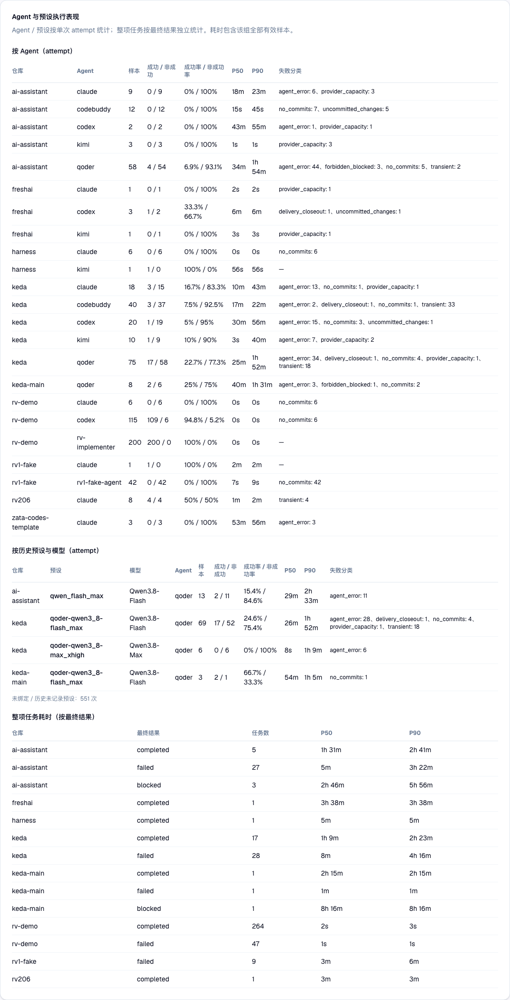
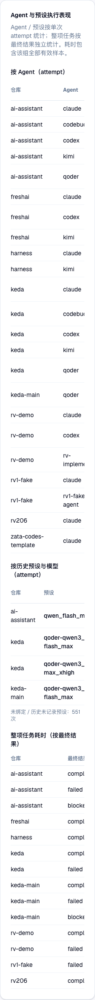

第 1 项 · 确认 Agent / 预设成功率按 attempt 计算
attempt 指一条 Agent 单次执行记录；整项任务的最终 outcome 单独统计，不回归给任一 Agent 或预设。
你在决定什么：确认成功率按每次执行计算。如果判错：失败后被替换的 Agent 可能被错误记成整项任务成功，比较结果会误导选择。
PRD 原文（§2 决策一）：
是否接受 Agent / 预设成功率按 attempt 计算，且整项任务结果不归属到单个 Agent 或预设？
attempt 指一条 Agent 单次执行记录；整项任务最终状态只进入任务汇总。
第 2 项 · 查看真实 Stats 页面呈递与窄屏结果
你在决定什么：查看真实 `/app/stats` 页面截图并核对 Agent / 预设 / 整项任务表格及窄屏状态。如果判错：真实用户可能看不到关键指标，窄屏布局也可能无法操作。
PRD 原文（§9 Human-Confirmed）：
§9.1 人读呈递区已查看，或按表中复核方法完成检查。
对应对象：Agent 与预设行显示样本数、成功 / 非成功比例、P50/P90 和失败分类；整项任务按 outcome 独立呈现。
呈递截图来自 just console-sync 后由 worktree uv run kc console 服务、真实浏览器打开的 /app/stats 页面（全部仓库 + 30 天窗口，无 mock，数据为本地运行账本的真实记录）：


overflow-x: auto 横向滚动（容器 173px < 内容 920px）。自动化门禁：just e2e tests/playwright-e2e/tests/smoke/stats-agent-performance.spec.ts 5/5 通过（见 rv-2-e2e-green-final.txt）；预设样本数负控 4→5 变红、恢复转绿（见 rv-2-e2e-negative-control.txt）。
复核入口（可选）：在当前 worktree 执行 just console-sync，再运行 uv run kc console 打开真实 /app/stats，把窗口拖到 375px 并点击“收起导航栏”核对横向滚动。
审查结果（复制下面这段回给 agent）
静态底稿：同目录 human-review-checklist.md。rv-2 真实页面呈递截图已内嵌于第 2 项。